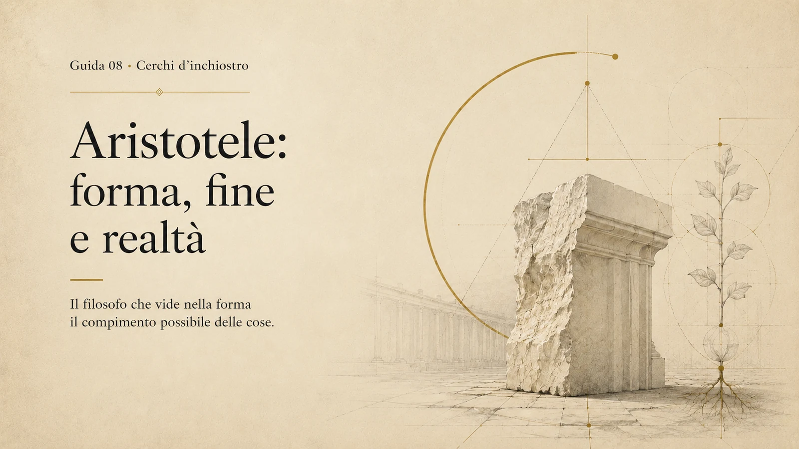

Indice
Guida sistemica · Cerchi d’inchiostro
Aristotele: forma, fine e realtà
Il filosofo che vide nella forma il compimento possibile delle cose
Aristotele porta la filosofia dentro la struttura concreta del reale.
Con lui la domanda sulla verità non resta sospesa sopra il mondo: entra nelle cose, nei viventi, nelle azioni, nella città, nel ragionamento, nell’amicizia, nella felicità. La filosofia diventa attenzione alle forme attraverso cui qualcosa esiste, muta, cresce, agisce e giunge al proprio compimento.
La sua domanda più semplice è anche la più esigente:
Che cosa fa essere una cosa ciò che è?
Da questa domanda discendono sostanza, forma, materia, potenza, atto, causa, fine, natura, anima, virtù, polis, tragedia. Aristotele non costruisce soltanto un sistema filosofico: costruisce un modo di guardare il reale come ordine di forme, possibilità e compimenti.
Dentro Cerchi d’inchiostro, Aristotele entra in un momento preciso della costellazione. Dopo Seneca, che ha riportato la filosofia al dominio di sé, al tempo e alla morte, Aristotele sposta la domanda verso la realtà: quale struttura permette a una vita, a una comunità, a un sapere o a un’opera di non restare materia dispersa?
La sua ferita contemporanea è questa:
Aristotele e la perdita della forma: il mondo della pura efficienza che fatica a riconoscere la propria forma compiuta.
Non è una formula nostalgica. È una diagnosi. Il presente moltiplica mezzi, strumenti, funzioni, dati e possibilità. Ma spesso resta incerto sul fine che dovrebbe ordinare questa potenza. Aristotele serve qui: non come rifugio nell’antico, ma come filosofo capace di rimettere in rapporto ciò che possiamo fare con ciò che merita di essere compiuto.

Aristotele in 5 minuti
Aristotele nasce a Stagira nel 384 a.C. e muore a Calcide nel 322 a.C. Fu allievo di Platone nell’Accademia, precettore di Alessandro Magno e fondatore del Liceo ad Atene. La sua opera attraversa logica, metafisica, fisica, biologia, psicologia, etica, politica, retorica e poetica.
Il centro del suo pensiero è la realtà concreta. Aristotele vuole capire che cosa rende una cosa ciò che è, perché muta, quale forma possiede, quale fine la orienta, come passa dalla possibilità al compimento. Per questo introduce alcuni degli strumenti concettuali più influenti della filosofia occidentale: sostanza, forma, materia, potenza, atto, causa, telos, virtù, eudaimonia.
La sostanza, per lui, non è un’idea generica. È anzitutto questo ente concreto: questo uomo, questo cavallo, questa pianta, questa città. La realtà primaria non è un concetto isolato, ma una realtà determinata, un tode ti, un “questo qui”, nel quale materia e forma si uniscono.
Nell’etica, Aristotele non identifica la felicità con uno stato emotivo. La felicità, o eudaimonia, è una vita riuscita: il compimento dell’esistenza umana secondo virtù. Si diventa capaci di una vita buona attraverso l’abito, la hexis: la disposizione stabile che nasce da educazione, ripetizione, scelta e carattere.
Nella politica, Aristotele definisce l’uomo animale politico. L’essere umano non si compie in isolamento, ma nella parola, nella giustizia, nell’amicizia, nella deliberazione e nella forma della comunità. La polis non serve soltanto a vivere: esiste in vista del vivere bene.
Aristotele resta decisivo perché costringe ancora oggi a una domanda elementare e severa: una società può disporre di molte possibilità tecniche, economiche e operative, ma senza una forma del vivere comune quelle possibilità restano incompiute.
Perché Aristotele è importante
Aristotele ha dato forma a una parte immensa del modo occidentale di pensare.
La sua importanza non dipende solo dalla vastità dei temi affrontati. Dipende dal gesto intellettuale: distinguere senza separare, classificare senza impoverire, osservare senza rinunciare alla domanda sui principi. Con lui la conoscenza diventa un esercizio di precisione. Prima di giudicare una cosa bisogna chiedersi che cosa sia, da che cosa sia fatta, quale principio la organizzi, quale mutamento la attraversi, verso quale compimento tenda.
La logica aristotelica ha formato per secoli la disciplina del ragionamento. La metafisica ha imposto la domanda sull’essere e sulla sostanza. L’etica ha pensato la virtù come costruzione del carattere. La politica ha interrogato la comunità come forma necessaria della vita umana. La Poetica ha mostrato che anche la rappresentazione dell’azione possiede una struttura conoscitiva.
Aristotele impedisce alla filosofia di evaporare nell’astrazione pura. Il suo pensiero resta vicino agli animali, alle città, alle costituzioni, alle passioni, agli atti, alle abitudini, alle forme della parola pubblica. La realtà non è per lui una materia senza volto a disposizione della volontà: possiede configurazioni, limiti, possibilità, direzioni interne.
Per questo parla ancora al presente. In un’epoca che confonde l’accumulo di possibilità con la libertà e la prestazione con il compimento, Aristotele riporta al centro una domanda più antica e più difficile: che cosa rende una vita davvero riuscita? Che cosa rende una comunità davvero politica? Che cosa rende una conoscenza davvero conoscenza?
Il problema umano che Aristotele incarna
Il compimento, per Aristotele, non è un dato automatico. È il problema stesso della vita umana.
Ogni essere umano nasce come possibilità. Può diventare molte cose, ma non tutte le possibilità hanno lo stesso valore. Una vita prende forma attraverso azioni, abitudini, educazione, relazioni, desideri ordinati, intelligenza pratica. L’esistenza non è soltanto apertura: è formazione.
L’uomo non si compie restando indefinito. Si compie dando forma alla propria potenza.
Questa è una delle sue intuizioni più importanti. La libertà non coincide con la pura assenza di vincoli. Una libertà senza forma può disperdersi, consumarsi, restare sospesa. La vita buona richiede misura, esercizio, carattere, discernimento. Richiede un rapporto tra ciò che siamo, ciò che possiamo diventare e ciò che merita di essere perseguito.
Per Aristotele il compimento umano non è solitario. Nessuno diventa pienamente umano fuori da una rete di linguaggio, amicizia, giustizia, educazione e vita comune. La polis non è soltanto il luogo del potere: è la forma in cui l’umano può articolarsi pubblicamente.
Il problema umano di Aristotele riguarda dunque la distanza tra possibilità e forma. Un individuo può avere talento senza virtù. Una città può avere istituzioni senza bene comune. Una società può avere strumenti senza fini.
Aristotele permette di nominare questa frattura.
Il suo pensiero chiede al presente di guardarsi senza indulgenza: abbiamo aumentato le possibilità, ma non sempre abbiamo rafforzato le forme capaci di orientarle. Abbiamo esteso la potenza, ma spesso lasciamo indeterminato l’atto.
Vita essenziale
Aristotele nasce a Stagira, nella penisola calcidica, nel 384 a.C. La sua origine lo colloca in una posizione particolare rispetto ad Atene: non nasce nel cuore della polis ateniese, ma in un’area vicina alla Macedonia. Questo dato non va trasformato in destino, ma aiuta a comprendere una certa ampiezza del suo sguardo. Aristotele sarà greco fino in fondo, e insieme mai riducibile alla sola Atene.
Il padre, Nicomaco, fu medico legato alla corte macedone. Anche qui serve cautela: non si può dedurre un’intera filosofia da un dato familiare. Ma l’attenzione aristotelica ai corpi, agli organismi, alla struttura del vivente, alla funzione delle parti, trova in questo ambiente un primo sfondo plausibile.
Intorno ai diciassette anni Aristotele si trasferisce ad Atene ed entra nell’Accademia di Platone. Vi rimane per circa vent’anni. È un periodo decisivo: Aristotele si forma nel più alto laboratorio filosofico del tempo, assorbe la grande domanda platonica sulla verità, sulla forma, sull’anima, sulla città, ma sviluppa progressivamente una propria direzione.
Dopo la morte di Platone, nel 347 a.C., lascia Atene. Trascorre un periodo ad Asso, nell’Asia Minore, presso l’ambiente di Ermia di Atarneo. Qui si lega anche a Pizia, indicata dalla tradizione come parente o figlia adottiva di Ermia, che Aristotele sposerà. Il dettaglio non è ornamentale: mostra un primo contatto con una politica concreta, fatta di protezioni, alleanze, vulnerabilità e potere reale.
In seguito soggiorna a Mitilene, sull’isola di Lesbo. È una fase preziosa per gli studi naturalistici. L’osservazione degli organismi marini e del vivente lascia traccia nel metodo aristotelico: la filosofia impara a scendere nel dettaglio senza perdere la domanda sulla forma.
Poi viene chiamato da Filippo II di Macedonia come precettore del giovane Alessandro. Il rapporto con Alessandro Magno resterà uno dei passaggi più celebri della sua biografia, ma va tenuto nella giusta proporzione: è importante, non totalizzante. Aristotele non si spiega attraverso Alessandro, né Alessandro attraverso Aristotele.
Nel 335 a.C., tornato ad Atene, fonda il Liceo. Qui organizza una scuola, una comunità di ricerca, una forma di lavoro intellettuale. Il Liceo non è soltanto un luogo di insegnamento: è uno spazio di raccolta, classificazione, osservazione e sistemazione dei saperi.
Dopo la morte di Alessandro, nel 323 a.C., il clima politico ateniese diventa ostile ai Macedoni e a chi è percepito come vicino al loro mondo. Aristotele lascia Atene e si rifugia a Calcide, dove muore nel 322 a.C.
La sua vita attraversa tre luoghi decisivi: l’Accademia, la Macedonia, il Liceo. Tre tensioni corrispondenti: verità, potere, metodo.
La vita che illumina l’opera
Nel caso di Aristotele, la vita illumina l’opera attraverso un movimento: entrare nella scuola di Platone, uscire dalla sua ombra, fondare un proprio modo di guardare il reale.
Il primo snodo è l’Accademia. Aristotele non si forma contro Platone, ma dentro Platone. La sua filosofia nasce in dialogo con la domanda platonica sulla verità, sull’essere, sulla conoscenza, sulla città. Ridurlo a semplice oppositore di Platone significa perdere il nucleo della sua grandezza. Aristotele eredita da Platone l’ambizione massima della filosofia: pensare il reale nella sua intelligibilità. Ma sposta il baricentro. Cerca la forma non oltre le cose, ma nelle cose.
Il secondo snodo è l’uscita da Atene dopo la morte di Platone. Ad Asso e a Mitilene la filosofia si allarga. Il mondo naturale, gli animali, la generazione, il movimento, la vita, le forme politiche, i saperi entrano nella sua opera con una concretezza che la distingue. Aristotele diventa pienamente Aristotele quando la domanda sulla forma incontra l’osservazione del vivente.
Il terzo snodo è il rapporto con la Macedonia. Aristotele vive vicino al potere, ma non diventa semplicemente filosofo di corte. Il suo rapporto con Filippo II e Alessandro mostra la condizione complessa del filosofo nel mondo storico: la filosofia pensa la forma della vita politica, ma vive dentro rapporti di forza, guerre, imperi, alleanze e sospetti.
Il quarto snodo è la fondazione del Liceo. Qui il sapere viene raccolto, ordinato, discusso, classificato. Aristotele non lascia solo dottrine: lascia una forma di lavoro. Il Liceo diventa una macchina intellettuale antica, capace di attraversare logica, natura, etica, politica, poetica, retorica e biologia senza trasformarle in compartimenti isolati.
La vita di Aristotele illumina dunque l’opera perché mostra una traiettoria di forma: dalla formazione ricevuta alla forma trovata, dalla scuola del maestro alla fondazione di una scuola propria.
Dall’Accademia al Liceo
Il passaggio dall’Accademia al Liceo non è una semplice successione di scuole. È un cambiamento di postura filosofica.
L’Accademia di Platone aveva posto al centro la domanda sulla verità, sull’educazione dell’anima, sulla giustizia, sulle idee, sulla città. Era un luogo in cui la filosofia cercava la struttura intelligibile del reale e la formazione dell’uomo capace di orientarsi oltre l’opinione.
Aristotele riceve questa eredità e la trasforma.
Nel Liceo la filosofia assume un passo più analitico, più classificatorio, più vicino all’osservazione. Non perde l’ambizione metafisica, ma la lega alla pazienza delle distinzioni. Il sapere aristotelico non si accontenta di indicare l’alto: vuole comprendere il modo in cui il reale si articola.
Platone pensa la forma come ciò verso cui l’anima deve elevarsi per superare il dominio dell’apparenza. Aristotele la cerca come principio immanente, come struttura che rende una cosa determinata e conoscibile.
La differenza è seria, ma non distrugge la continuità. Aristotele resta un filosofo della forma; soltanto, la forma non abita principalmente in una regione separata. Abita la sostanza concreta, il vivente, l’azione, la comunità, l’opera.
Il Liceo rappresenta questa svolta. La filosofia non è solo ascesa verso il principio; è anche disciplina dell’osservazione, arte della distinzione, ricerca della causa adeguata.
Aristotele e Platone: continuità, distanza, eredità
Il rapporto tra Aristotele e Platone è uno dei luoghi più delicati della guida.
La formula scolastica li oppone: Platone filosofo delle idee, Aristotele filosofo della realtà concreta. La distinzione è utile come primo orientamento, ma diventa povera se viene trasformata in schema definitivo.
Aristotele nasce filosoficamente nell’Accademia. Per vent’anni vive dentro il mondo platonico, ne assorbe le domande, ne condivide l’ambizione, ne eredita il problema centrale: come può il pensiero conoscere qualcosa di stabile in un mondo che muta?
La distanza nasce dalla risposta.
Platone colloca le forme intelligibili in una dimensione superiore rispetto al mondo sensibile. Il mondo visibile partecipa di quelle forme, ma non le esaurisce. La verità richiede un movimento di conversione dell’anima, un’educazione dello sguardo.
Aristotele cerca la forma nella cosa. La sostanza concreta è unità di forma e materia. Il cavallo concreto, l’albero concreto, l’uomo concreto non sono soltanto copie inferiori di un modello altrove: sono realtà nelle quali la forma organizza la materia e rende l’ente conoscibile.
Il suo realismo non è abbassamento della filosofia. È fiducia nell’intelligibilità del mondo sensibile.
Nel pensiero della natura, Aristotele guarda al movimento, al mutamento, alla crescita, alla generazione. Nel pensiero etico, guarda agli abiti e alla formazione del carattere. Nel pensiero politico, guarda alle costituzioni reali. Nella poetica, guarda alla struttura dell’azione rappresentata.
Aristotele eredita da Platone la grandezza della domanda. La sua originalità sta nell’aver risposto cercando la forma dentro la realtà concreta.
Filippo II, Alessandro e il rapporto con il potere
Il rapporto tra Aristotele e la Macedonia introduce un nodo decisivo: la filosofia non vive fuori dalla storia.
Aristotele viene chiamato da Filippo II come precettore del giovane Alessandro. L’immagine è potente: uno dei più grandi filosofi dell’antichità educa colui che diventerà uno dei più grandi conquistatori della storia. Proprio per questo va maneggiata con misura.
Aristotele non spiega Alessandro, e Alessandro non riassume Aristotele. Il filosofo non può essere ridotto al maestro del conquistatore; il conquistatore non può diventare semplice allievo della filosofia.
Il dato essenziale è un altro: Aristotele vive nel punto in cui la polis greca entra in una nuova fase storica. La Macedonia modifica gli equilibri del mondo greco. Il potere assume scala diversa: dinastica, militare, imperiale.
In questo contesto, Aristotele continua a pensare la polis come forma alta della vita comune. La sua filosofia politica resta legata all’idea che l’uomo si compia nella comunità, nella parola, nella giustizia, nella deliberazione. Ma la sua biografia lo colloca dentro un mondo in trasformazione, dove la città classica è sottoposta a pressioni nuove.
Anche il passaggio da Asso, legato a Ermia di Atarneo, aiuta a leggere questa tensione. Aristotele non conosce il potere solo come oggetto teorico. Lo incontra nei luoghi della protezione politica, dell’alleanza, della dipendenza, del rischio.
La domanda aristotelica sulla forma politica nasce dunque dentro un mondo che cambia scala. Anche oggi le comunità concrete vivono sotto poteri economici, tecnologici e amministrativi più ampi di loro. Aristotele aiuta a chiedere che cosa resta della vita politica quando la decisione si allontana dalla forma visibile della comunità.
Il Liceo e il metodo peripatetico
Il Liceo è la forma istituzionale del pensiero aristotelico.
Il nome rimanda al luogo ateniese legato ad Apollo Liceo. La tradizione associa alla scuola anche il termine “peripatetica”, connesso al peripatos, il portico o camminamento in cui si discuteva. L’immagine dell’insegnamento camminando è suggestiva, ma il punto decisivo è un altro: il pensiero aristotelico procede nel reale, non sopra di esso.
Nel Liceo si insegna, si discute, si raccoglie materiale, si confrontano dati, si classificano forme. La tradizione attribuisce alla scuola aristotelica anche una grande raccolta di costituzioni greche, di cui ci è giunta la Costituzione degli Ateniesi. Questo dettaglio è importante: Aristotele non immagina la politica soltanto in astratto. La studia come forma concreta, plurale, storica.
Il metodo aristotelico procede attraverso distinzione, osservazione, definizione, confronto. Vuole sapere di che cosa si parla, a quale genere appartiene una cosa, quali cause la spiegano, quali parti la compongono, quale funzione svolge, quale fine la orienta.
Il Liceo non è dunque un episodio biografico. È il laboratorio in cui una filosofia della forma assume forma di ricerca.
Il contesto storico e culturale
Aristotele vive nel IV secolo a.C., tra la fine del mondo classico della polis e l’apertura dell’età ellenistica.
Alle sue spalle ci sono Atene, Socrate, Platone, la tragedia, la retorica, la sofistica, la guerra del Peloponneso, la crisi delle forme politiche tradizionali. Davanti a lui si apre il mondo macedone, l’espansione di Alessandro, la progressiva trasformazione della città greca dentro spazi politici più vasti.
Questa posizione intermedia è decisiva. Aristotele pensa ancora la comunità politica come forma naturale e necessaria della vita umana, ma lo fa mentre la polis classica perde centralità storica.
Sul piano culturale eredita una densità di saperi che non corrisponde alle divisioni moderne. Filosofia, scienza, etica, politica, poetica, retorica e biologia appartengono a una stessa ambizione: comprendere la struttura del reale e il posto dell’uomo dentro di essa.
Il contesto aristotelico è insieme crisi e sistemazione. Crisi, perché le forme della Grecia classica stanno mutando. Sistemazione, perché Aristotele ordina l’eredità precedente dentro un’architettura di concetti, discipline e metodi.
In un mondo che cambia forma, Aristotele costruisce una filosofia della forma.
I cerchi disciplinari di Aristotele
Aristotele non divide il sapere in cassetti per isolarlo. Lo distingue per vedere meglio l’ordine dell’unico reale.
La logica studia la forma del ragionamento. La metafisica interroga l’essere, la sostanza, l’atto e la potenza. La fisica indaga natura, movimento e mutamento. La biologia osserva il vivente come organizzazione di parti e funzioni. L’etica pensa la formazione del carattere. La politica studia la comunità come forma della vita buona. La retorica analizza la parola persuasiva. La poetica mostra che anche il racconto dell’azione possiede una struttura intelligibile.
Questi campi non sono frammenti casuali. Sono angolazioni diverse su una stessa domanda: come prende forma il reale?
Per questo Aristotele attraversa quasi tutti i cerchi disciplinari di Cerchi d’inchiostro: filosofia e metafisica, filosofia politica e Stato, scienza e tecnica, sociologia dell’ordine comune, estetica e arte, media e linguaggio, AI e futuro come crisi della forma e dei fini.
La sua vastità va letta così: non accumulo di materie, ma cartografia della realtà.
Le opere principali
Le opere di Aristotele che possediamo sono in larga parte testi legati all’insegnamento e alla ricerca interna della scuola. La tradizione distingue spesso tra scritti esoterici o acroamatici, destinati all’uso interno, e scritti essoterici, più letterari e pubblici, in gran parte perduti. Questa distinzione spiega anche la densità dello stile aristotelico: non stiamo leggendo dialoghi costruiti per sedurre il pubblico, ma materiali filosofici di lavoro, spesso tecnici, stratificati, asciutti.
Le opere principali possono essere raccolte per grandi aree.
Organon. Comprende gli scritti logici: Categorie, De interpretatione, Analitici primi, Analitici secondi, Topici, Confutazioni sofistiche. Il titolo “Organon” è successivo ad Aristotele e indica la logica come strumento del sapere.
Metafisica. Interroga l’essere in quanto essere, la sostanza, le cause, l’atto, la potenza, il principio primo. È il luogo in cui la domanda sulla realtà raggiunge il massimo livello teorico.
Fisica. Studia natura, movimento, mutamento, tempo, luogo, cause naturali. La physis è pensata come principio interno di movimento e trasformazione.
De anima. Indaga l’anima come forma del corpo vivente, principio delle funzioni vitali, percettive e conoscitive.
Opere biologiche. Parti degli animali, Generazione degli animali, Storia degli animali sono fondamentali per capire l’attenzione aristotelica al vivente, alla classificazione, alla funzione e alla finalità naturale.
Etica Nicomachea. Testo decisivo per virtù, abito, scelta, giusto mezzo, saggezza pratica, amicizia ed eudaimonia.
Politica. Raccoglie la riflessione sulla polis, sul cittadino, sulle costituzioni, sull’educazione e sul bene comune. Va letta nel suo tempo, ma resta una delle grandi fonti della filosofia politica occidentale.
Retorica. Analizza l’arte della persuasione, i generi del discorso, il ruolo delle passioni, della credibilità e dell’argomentazione.
Poetica. Studia tragedia, mimesis, intreccio, azione, riconoscimento, rovesciamento e catarsi. Ha segnato per secoli la teoria della letteratura e del teatro.
Queste opere non compongono un archivio disperso. Cercano in ogni campo la forma intelligibile attraverso cui il reale diventa conoscibile.
L’Organon e la forma del ragionamento
Prima di discutere il reale, bisogna dare forma al pensiero che lo interroga.
L’Organon raccoglie gli scritti logici di Aristotele e rappresenta uno dei fondamenti della tradizione razionale occidentale. Il termine significa “strumento”: la logica non è una disciplina ornamentale, ma l’attrezzatura del conoscere.
Aristotele studia i modi in cui diciamo le cose, formuliamo giudizi, costruiamo argomenti, deduciamo conclusioni, dimostriamo proposizioni, riconosciamo errori. Il pensiero non è semplice successione di opinioni. Possiede strutture e vincoli.
Il sillogismo è il cuore di questa impostazione. È una forma di ragionamento deduttivo in cui, date certe premesse, segue necessariamente una conclusione. La sua forza non sta nel produrre parole convincenti, ma nel mostrare quando una conclusione deriva correttamente da ciò che è stato posto.
Questo punto permette di capire l’intero Aristotele. La sua filosofia non cerca solo contenuti veri, ma forme corrette del conoscere. La realtà ha una struttura; anche il pensiero deve avere una struttura adeguata per comprenderla.
In un tempo saturo di enunciati, dati e opinioni, Aristotele ricorda che l’intelligenza non nasce dall’accumulo. Nasce dalla capacità di distinguere, connettere, argomentare e concludere senza confondere ciò che è soltanto persuasivo con ciò che è fondato.
Categorie e sostanza
Per Aristotele, pensare significa anzitutto distinguere.
Le categorie sono i modi fondamentali attraverso cui diciamo qualcosa dell’essere. Possiamo dire che cosa una cosa è, quanto è grande, quale qualità possiede, dove si trova, in che relazione sta con altro, che cosa fa, che cosa subisce. Il linguaggio, se usato con rigore, diventa una forma di ordinamento del reale.
Tra le categorie, la più importante è la sostanza.
La sostanza è ciò che esiste come realtà determinata. In senso primario è l’individuo concreto: questo uomo, questo cavallo, questo albero. Aristotele parla qui di ciò che si può indicare come un tode ti, un “questo qui”. In senso secondario, sostanza può indicare anche la specie o il genere: uomo, cavallo, vivente. Ma la realtà primaria resta l’ente concreto.
Questo punto evita due fraintendimenti. Aristotele non dissolve il reale in qualità isolate; ma non lo riduce nemmeno a materia grezza. Una cosa può cambiare colore, dimensione, posizione, condizione, ma resta quella cosa finché conserva una certa identità formale.
La sostanza è il primo argine contro la dispersione del reale.
In un presente che tende spesso a ridurre le cose a funzioni, prestazioni, immagini o dati, Aristotele riporta l’attenzione su una domanda più radicale: prima di chiederci a cosa serve qualcosa, bisogna chiedersi che cosa è.
Forma e materia
La sostanza concreta è unità di forma e materia.
La materia è ciò di cui una cosa è fatta. La forma è ciò che la organizza, la determina, la rende quella cosa e non un’altra. Una statua può essere di bronzo, ma il bronzo da solo non è ancora statua. Diventa statua quando riceve una forma. Allo stesso modo, un corpo vivente non è semplice accumulo di parti: è organismo, cioè materia organizzata secondo una forma vitale.
La forma non è soltanto il profilo esteriore. È il principio interno che dà struttura, identità, funzione e intelligibilità. La materia, d’altra parte, non è nulla. È possibilità reale, disponibilità a ricevere determinazione. Senza materia, la forma resterebbe priva di consistenza concreta; senza forma, la materia resterebbe indeterminata.
La realtà sensibile è fatta di questa unione.
Qui Aristotele prende distanza dalla soluzione platonica più nota. La forma non viene pensata principalmente come separata dal mondo sensibile. È nella cosa, come suo principio di organizzazione.
Questa intuizione conserva forza anche oggi. Una società che possiede molte risorse ma non sa ordinarle resta incompiuta. Un progetto con mezzi ma senza struttura resta fragile. Una vita piena di possibilità, se non assume una figura stabile, rischia di consumarsi prima di compiersi.
Potenza e atto
Potenza e atto sono una grammatica del divenire.
La potenza è la capacità reale di essere o diventare qualcosa. L’atto è il compimento effettivo di quella capacità. Un seme è in potenza una pianta. Un bambino è in potenza un adulto. Un musicista che possiede la capacità di suonare è in potenza rispetto all’esecuzione; quando suona, quella capacità passa all’atto.
La distinzione permette ad Aristotele di pensare il mutamento senza ridurlo al caos. Qualcosa diventa ciò che poteva diventare secondo una possibilità interna.
Ma la potenza non è sullo stesso piano dell’atto. In Aristotele l’atto ha un primato: la potenza si comprende a partire da ciò verso cui tende. Il seme è potenza perché può diventare pianta; la capacità è potenza perché può esercitarsi; la vita incompiuta è potenza perché può prendere forma.
Questo non significa che ogni possibilità si realizzi automaticamente. La potenza ha bisogno di condizioni, esercizio, causa, tempo. Un seme può non diventare pianta. Un talento può restare sterile. Una città può non raggiungere una forma politica alta.
Qui Aristotele tocca un punto decisivo per l’esperienza umana. L’uomo non coincide con ciò che potrebbe essere. La possibilità, da sola, non basta. Una vita interamente sospesa nella potenza resta aperta, ma incompiuta.
La modernità ama la potenza: opzioni, strumenti, accesso, crescita, mobilità, scelte. Aristotele chiede quale atto corrisponda a questa potenza. Che cosa diventa davvero una possibilità quando prende forma? Quale compimento la giustifica?
Le quattro cause
Per Aristotele conoscere una cosa significa comprenderne le cause.
La parola “causa” va intesa in senso ampio. Non indica soltanto ciò che produce materialmente un effetto. Indica i diversi modi attraverso cui una realtà può essere spiegata.
Aristotele distingue quattro cause fondamentali: materiale, formale, efficiente, finale.
La causa materiale è ciò di cui una cosa è fatta. Una statua è fatta di bronzo, una casa di pietra e legno, un organismo di parti corporee.
La causa formale è la struttura che rende una cosa ciò che è. La statua non è soltanto bronzo: è bronzo organizzato secondo una forma. Una casa non è soltanto materiale da costruzione: è struttura abitabile.
La causa efficiente è ciò che produce il mutamento o dà avvio al processo. Lo scultore scolpisce la statua, il costruttore edifica la casa, il genitore genera il figlio, l’azione produce un effetto.
La causa finale è ciò in vista di cui una cosa è fatta o accade. La casa è costruita per abitare. Lo strumento è fatto per un uso. L’azione virtuosa tende a una forma di bene.
Le quattro cause insegnano che una cosa non si capisce da un solo lato. Per comprendere davvero bisogna chiedere di che cosa è fatta, quale forma possiede, che cosa l’ha prodotta, verso quale fine tende.
Prendiamo una città. La causa materiale sono edifici, strade, infrastrutture, corpi, risorse. La causa formale è l’ordine urbano, istituzionale e simbolico che la rende città e non semplice aggregato. La causa efficiente sono decisioni, economie, eventi storici, istituzioni. La causa finale è il tipo di vita comune che quella città rende possibile.
Quando una società perde la causa finale, può ancora funzionare. Ma non sa più con precisione per quale vita comune stia agendo.
Teleologia: il fine come compimento
La teleologia aristotelica va capita con cautela.
Il termine viene da telos, fine. In Aristotele il fine non è un progetto cosciente imposto dall’esterno. È una direzione di compimento, spesso immanente alla natura della cosa. Un seme tende a diventare pianta; un vivente tende a sviluppare le proprie funzioni; una facoltà tende al proprio esercizio; una virtù tende a formare un carattere buono.
La natura, in Aristotele, non “decide” come una mente provvidenziale. Possiede principi interni di movimento e sviluppo. Il fine non elimina il mutamento: lo rende intelligibile.
Nella vita umana, questa intuizione diventa più esigente. Un uomo può agire, desiderare, produrre, parlare. Ma la domanda aristotelica è: verso quale forma di vita? Ogni azione tende a un bene, ma non tutti i beni sono uguali. Alcuni sono strumenti; altri ordinano la vita.
La perdita contemporanea del fine produce uno smarrimento concreto. Si può essere efficienti senza sapere a che cosa serva l’efficienza. Si può innovare senza sapere quale umano si stia generando. Si possono formare competenze senza formare giudizio.
Aristotele non offre una formula pronta. Offre una grammatica: per giudicare una cosa, bisogna chiedere se realizza la propria forma, se trasforma la potenza in atto, se compie il proprio fine secondo una misura adeguata.
Metafisica: l’essere e la sostanza
La Metafisica cerca i principi primi del reale.
Il suo tema fondamentale è l’essere. Aristotele cerca una scienza capace di studiare l’essere in quanto essere, cioè non questo o quell’aspetto particolare della realtà, ma ciò che accomuna ogni ente nel suo esistere.
La metafisica non è fuga dal mondo. È ricerca di ciò che rende il mondo intelligibile. Per Aristotele, la domanda sull’essere non dissolve le cose concrete: le attraversa. La sostanza resta il punto decisivo, perché l’essere si dice in molti modi, ma trova nella sostanza il proprio riferimento primario.
La Metafisica raccoglie anche la riflessione sulle cause, sulla potenza e sull’atto. L’atto assume un valore superiore rispetto alla potenza: ciò che è compiuto possiede una pienezza che la pura possibilità non ha ancora.
La dottrina del motore immobile — atto puro, oggetto di pensiero e desiderio — è uno dei nodi più esplorati dalla tradizione successiva. In questa guida interessa soprattutto come figura estrema dell’atto compiuto, della realtà pienamente realizzata.
Il cuore della Metafisica, dentro Cerchi d’inchiostro, è questo: Aristotele cerca ciò che dà consistenza, intelligibilità e ordine al reale.
La domanda resta potente perché il presente tende spesso a pensare il mondo come flusso di dati, processi, funzioni e relazioni. Aristotele chiede che cosa tiene insieme una cosa, che cosa la rende riconoscibile, che cosa la distingue dal rumore indeterminato dei fenomeni.
Fisica: natura, movimento e mutamento
La Fisica studia la natura, il movimento e il mutamento.
Per Aristotele la natura non è un insieme di oggetti inerti. È principio interno di movimento. Un ente naturale possiede in sé la fonte del proprio sviluppo, della propria trasformazione, della propria crescita. Un albero cresce secondo il proprio principio naturale; un animale si muove, si nutre, si riproduce; un corpo muta secondo modalità che vanno comprese.
Il movimento non riguarda soltanto lo spostamento nello spazio. Esistono diversi tipi di mutamento: generazione e corruzione, crescita e diminuzione, alterazione, movimento locale. La realtà naturale è attraversata dal divenire, ma questo divenire può essere pensato.
La Fisica mostra la distanza tra Aristotele e una visione puramente meccanica della natura. Ogni ente naturale va compreso secondo ciò che è, ciò di cui è fatto, il modo in cui muta, il fine verso cui tende.
La scienza moderna romperà con molte parti della fisica aristotelica. La nuova fisica matematica, da Galileo in poi, cambierà radicalmente il modo di pensare movimento, causalità, esperienza e misurazione. Sarebbe ingenuo leggere Aristotele come fonte scientifica valida nel senso moderno.
Ma sarebbe povero liquidarlo per questo.
La forza di Aristotele non sta nell’aver dato risposte scientifiche definitive. Sta nell’aver costruito una grande domanda sulla natura come ordine intelligibile. La sua fisica appartiene al mondo antico, ma conserva un valore filosofico: invita a pensare mutamento, forma, causa, crescita, rapporto tra possibilità e compimento.
Biologia: classificare il vivente
La biologia è una parte essenziale del pensiero aristotelico.
Spesso viene trattata come settore secondario, quasi marginale rispetto alla metafisica o all’etica. In realtà, l’attenzione al vivente illumina tutto il suo metodo. Osservare gli animali, distinguere le loro parti, studiare generazione, funzioni, organi e differenze significa entrare nella realtà concreta della forma.
Gli organismi viventi sono il luogo in cui forma e materia diventano immediatamente visibili.
Un vivente non è una massa di elementi assemblati dall’esterno. È un corpo organizzato secondo funzioni. Ogni parte ha un ruolo dentro l’intero. Un organo si comprende rispetto alla vita dell’organismo. La forma del vivente non è decorazione: è organizzazione, principio di unità, struttura di sviluppo.
Il soggiorno a Lesbo rafforza questo tratto. L’osservazione del vivente marino e delle sue differenze contribuisce a una filosofia che non teme il dettaglio. Aristotele porta la filosofia vicino agli organismi, alle parti, alle funzioni. Non considera il particolare un ostacolo al pensiero: lo considera il luogo in cui la forma si manifesta.
Molte conoscenze biologiche aristoteliche sono state superate. La postura resta importante: il vivente chiede di essere compreso come unità organizzata, non come semplice somma di elementi.
In un’epoca che tende a ridurre la vita a codice, dato, prestazione o risorsa biologica, Aristotele mantiene aperta una domanda più ampia: che cos’è un vivente come forma organizzata di funzioni, sviluppo e limite?
De anima: anima, vita, conoscenza
Nel De anima, Aristotele pensa l’anima come principio della vita.
L’anima non va intesa anzitutto come realtà separata dal corpo nel senso moderno o immediatamente religioso del termine. È ciò per cui un corpo vivente è vivente. Un organismo non è semplice materia animata dall’esterno: è un corpo organizzato secondo una forma vitale.
L’anima è la forma del corpo vivente.
In Aristotele, anima e corpo non sono due realtà estranee accostate dall’esterno. Il corpo vivente è materia organizzata; l’anima è il principio che ne struttura le funzioni vitali.
Aristotele distingue diversi livelli dell’anima. L’anima vegetativa riguarda nutrizione, crescita e riproduzione. L’anima sensitiva riguarda percezione, movimento, desiderio. L’anima razionale riguarda pensiero, intelletto, capacità di conoscere l’universale.
Questa distinzione collega biologia, antropologia e conoscenza. L’uomo conosce perché la sua forma vitale è capace di aprirsi alla forma delle cose.
Qui si apre anche uno dei problemi più discussi della tradizione aristotelica: il rapporto tra intelletto attivo e intelletto passivo, la loro separabilità, il loro statuto, il loro destino. La questione alimenterà secoli di interpretazioni, dal mondo arabo alla scolastica latina.
Per il nostro percorso conta un punto: in Aristotele il pensiero umano nasce dentro un vivente dotato di corpo, percezione, desiderio, esperienza e intelligenza. Non siamo menti sospese. Siamo esseri viventi capaci di conoscere.
Etica Nicomachea: virtù e felicità
L’Etica Nicomachea chiede quale sia il fine della vita umana.
Ogni azione tende a un bene. Studiamo per qualcosa, lavoriamo per qualcosa, scegliamo per qualcosa. Ma non tutti i beni hanno lo stesso rango. Alcuni sono mezzi. Altri sembrano valere in sé.
Aristotele chiama il fine più alto eudaimonia.
Il termine viene spesso tradotto con “felicità”, ma la traduzione può ingannare. Per Aristotele la felicità non è una sensazione piacevole, né uno stato psicologico momentaneo. È una vita riuscita, una fioritura, un compimento dell’esistenza secondo la forma propria dell’uomo.
La felicità non coincide con piacere, ricchezza, onore o successo. Questi beni possono avere un ruolo nella vita, ma non bastano a definirne il compimento. La vita buona richiede un’attività dell’anima secondo virtù.
La virtù non è semplice obbedienza a una norma esterna. È una disposizione stabile del carattere. Si forma attraverso atti ripetuti, educazione, esercizio, scelta, abitudine. Si diventa giusti compiendo azioni giuste; si diventa coraggiosi compiendo azioni coraggiose; si diventa temperanti imparando a ordinare desideri e piaceri.
L’etica aristotelica è una filosofia della formazione. Non basta sapere che cosa è bene. Bisogna diventare capaci di compierlo.
La sua etica non consola. Forma.
La virtù come abito
Per Aristotele la virtù è hexis: abito, disposizione stabile, forma acquisita del carattere.
Non nasciamo virtuosi nello stesso modo in cui nasciamo con certe facoltà naturali. Possediamo la possibilità della virtù, ma questa possibilità deve essere educata, esercitata, resa stabile.
La virtù nasce dall’azione.
Un uomo diventa giusto facendo azioni giuste. Diventa coraggioso affrontando rettamente ciò che deve essere affrontato. Diventa temperante ordinando desideri e piaceri. Diventa generoso imparando a dare nel modo, nel tempo e nella misura adeguati.
Questa visione lega etica e tempo. La forma morale di una persona non si costruisce in un istante. È il risultato di scelte ripetute. Ogni azione lascia una traccia; ogni scelta contribuisce a formare una disposizione; ogni disposizione rende più facile o più difficile scegliere ancora in un certo modo.
L’uomo, per Aristotele, è plasmabile. Non è pura natura immutabile, ma nemmeno pura indeterminatezza. Riceve forma attraverso educazione, consuetudine, esempi, leggi, amicizie, istituzioni, pratiche quotidiane.
Questo punto ha un peso politico enorme. Una comunità deve chiedersi quali abiti produce. Una famiglia, una scuola, una città, un ambiente di lavoro non trasmettono soltanto informazioni o regole. Abituano a certi gesti, a certe parole, a certe soglie di attenzione, a certi modi di considerare gli altri.
La domanda aristotelica è concreta: quali abitudini stiamo rendendo normali?
Il giusto mezzo
Il giusto mezzo è uno dei concetti più noti dell’etica aristotelica, e uno dei più fraintesi.
Non indica mediocrità, tiepidezza o compromesso debole. Non significa scegliere sempre una posizione intermedia in senso quantitativo. Il giusto mezzo è la misura adeguata dell’azione rispetto alla persona, alla situazione, al fine e alla ragione.
La virtù sta tra due estremi: un eccesso e un difetto. Il coraggio sta tra temerarietà e viltà. La generosità sta tra prodigalità e avarizia. La temperanza sta tra intemperanza e insensibilità. Ma il punto non è cercare una media aritmetica. Il punto è trovare la forma giusta dell’azione.
La misura aristotelica è intelligente, non meccanica.
Agire bene significa riconoscere il momento, la circostanza, la posta in gioco, le persone coinvolte, il fine dell’azione. La stessa condotta può essere eccessiva in un caso e insufficiente in un altro. La virtù richiede giudizio pratico.
Qui entra in gioco la phronesis, la saggezza pratica. Non basta conoscere regole generali. Bisogna saper deliberare bene dentro situazioni concrete.
Nel presente, spesso oscillante tra esposizione e isolamento, iperattività e apatia, aggressività e passività, Aristotele non invita a stare “nel mezzo” per quieto vivere. Invita a dare all’azione la sua misura.
Eudaimonia: felicità come compimento
L’eudaimonia è il fine della vita umana.
Tradurre il termine con “felicità” è utile solo se ricordiamo che per Aristotele felicità non significa benessere momentaneo, piacere soggettivo o soddisfazione emotiva. L’eudaimonia è la riuscita complessiva della vita. È il vivere bene e l’agire bene secondo la forma propria dell’uomo.
Una vita felice è una vita compiuta.
Aristotele pensa la felicità come attività dell’anima secondo virtù. Questo significa che la felicità non è qualcosa che semplicemente accade. È qualcosa che si costruisce attraverso azioni, abiti, scelte, relazioni, ragione e tempo.
Qui emerge una distanza decisiva da molte immagini contemporanee della felicità. Oggi la felicità viene spesso pensata come sensazione, equilibrio psicologico, gratificazione, successo, autenticità immediata. Aristotele porta la questione su un piano più esigente: una vita è felice quando realizza bene ciò che è propriamente umano.
L’eudaimonia richiede anche condizioni esterne. Aristotele non è ingenuo: sa che la vita buona ha bisogno di relazioni, stabilità, educazione, beni esterni in certa misura. La virtù è centrale, ma l’uomo non vive fuori dal mondo.
Per questo l’eudaimonia collega etica e politica. Una città buona non deve soltanto garantire sopravvivenza o sicurezza. Deve rendere possibile una vita umana compiuta.
Amicizia e vita comune
Nell’Etica Nicomachea l’amicizia non è un tema laterale.
Per Aristotele appartiene alla struttura della vita buona. Una vita compiuta non può essere pensata senza relazioni ordinate, riconoscimento reciproco, fiducia, condivisione, parola.
Aristotele distingue amicizia fondata sull’utile, amicizia fondata sul piacere e amicizia fondata sul bene. La prima dura finché dura il vantaggio. La seconda è più ricca, ma resta esposta al mutamento dei desideri. La terza è la più alta: due persone si vogliono bene perché riconoscono reciprocamente una disposizione buona, una qualità morale, una forma di vita.
L’amicizia mostra che l’uomo non si compie da solo. La virtù ha bisogno di relazioni. La felicità ha bisogno di condivisione. Il carattere si forma anche attraverso amici, maestri, cittadini, compagni, figure di riferimento.
Per questo l’amicizia è un ponte tra etica e politica. Una città non vive soltanto di leggi. Vive di fiducia, reciprocità, riconoscimento, abiti comuni.
Dove ogni relazione viene ridotta a interesse, prestazione o scambio, la forma politica si indebolisce. Dove manca un tessuto minimo di amicizia civile, la comunità diventa aggregato di individui.
Politica: l’uomo come animale politico
La Politica di Aristotele nasce da una tesi celebre: l’uomo è per natura un animale politico.
Questa formula non significa semplicemente che l’uomo vive in gruppo. Anche altri animali conoscono forme di aggregazione. L’uomo è politico perché possiede il logos: parola, ragione, capacità di distinguere utile e dannoso, giusto e ingiusto, bene e male. La comunità politica nasce dalla possibilità di condividere questi giudizi.
La polis non è un artificio occasionale. È la forma nella quale la vita umana può giungere al proprio compimento. Famiglia e villaggio rispondono a bisogni primari; la città esiste in vista della vita buona. Non serve soltanto a sopravvivere. Serve a vivere bene.
La politica, per Aristotele, non è semplice gestione del potere, né pura amministrazione della sicurezza. È la forma della vita comune orientata al bene.
Questo legame tra etica e politica è decisivo. La virtù individuale ha bisogno di una forma pubblica. Una città educa, abitua, ordina, premia, corregge, orienta. Le istituzioni producono anche carattere.
La domanda politica fondamentale diventa allora: quale forma di comunità rende possibile una vita umana buona?
Costituzioni, comunità e bene comune
Aristotele studia le costituzioni con attenzione concreta.
La sua filosofia politica non immagina solo un regime perfetto. Osserva, confronta, classifica. La tradizione ricorda una raccolta di costituzioni greche legata alla scuola aristotelica: il dato mostra la volontà di leggere la politica nelle sue forme reali.
La classificazione aristotelica distingue le forme rette dalle forme deviate. Il criterio decisivo è il bene comune. Un governo è retto quando governa in vista del bene della comunità. Diventa deviato quando governa in vista dell’interesse particolare di chi detiene il potere.
La monarchia, se orientata al bene comune, può essere forma retta; se degenerata, diventa tirannide. L’aristocrazia può degenerare in oligarchia. La politia, governo dei molti orientato al bene comune, rappresenta una forma positiva; la democrazia, nella classificazione aristotelica antica, può diventare forma deviata quando i molti governano solo per il proprio interesse parziale.
Queste categorie vanno lette dentro il loro contesto storico. Il termine “democrazia” in Aristotele non coincide immediatamente con l’ideale costituzionale contemporaneo. La guida deve evitare sovrapposizioni frettolose.
Il punto forte è un altro: Aristotele valuta le forme politiche in base al loro fine.
Una costituzione non è soltanto un assetto giuridico. È la forma di una comunità. Stabilisce chi governa, secondo quali criteri, in vista di quale bene, con quale educazione dei cittadini, con quale equilibrio tra parti sociali, interessi e istituzioni.
Una società non si giudica solo dalla sua efficienza. Si giudica dalla forma di vita comune che rende possibile.
Poetica: mimesis, tragedia, catarsi
La Poetica studia la forma dell’azione rappresentata.
Il suo oggetto principale è la tragedia, ma il suo significato va oltre la teoria letteraria. Aristotele vuole capire perché gli uomini imitano, perché provano piacere nella rappresentazione, come si costruisce un racconto, che cosa rende potente una tragedia, quale effetto produce sullo spettatore.
Il concetto centrale è mimesis.
La mimesis non è copia passiva della realtà. È rappresentazione ordinata dell’azione umana. L’arte seleziona, dispone, dà forma. Mostra eventi, caratteri, scelte, rovesciamenti, riconoscimenti, sofferenze. La tragedia non riproduce la vita in modo grezzo: la compone secondo una struttura intelligibile.
Anche qui ritorna la forma. Una tragedia riesce quando l’azione ha unità, coerenza, necessità interna. Gli eventi non devono essere disposti a caso. Devono condurre lo spettatore attraverso paura, pietà e comprensione.
La catarsi è uno dei concetti più discussi della Poetica. Aristotele la collega all’effetto della tragedia su passioni come pietà e paura, ma il termine ha generato interpretazioni diverse: purgazione delle passioni, loro purificazione, chiarificazione emotiva. Il dibattito resta aperto, anche perché la Poetica conservata non scioglie tutti i nodi.
La Poetica mostra che la conoscenza non passa solo per la dimostrazione logica. Passa anche per la rappresentazione dell’azione. La tragedia insegna perché mostra uomini che agiscono, scelgono, sbagliano, riconoscono, precipitano, comprendono troppo tardi.
Una civiltà ha bisogno di forme narrative per comprendere sé stessa. Senza racconti, senza tragedie, senza rappresentazioni ordinate dell’agire umano, l’esperienza resta frammentata.
Idee chiave
La realtà concreta è intelligibile. Il mondo sensibile non è puro disordine. Le cose possiedono struttura, cause, processi, fini.
La sostanza è anzitutto l’ente concreto. Aristotele parte dal “questo qui”: l’individuo determinato, non un concetto separato.
La forma rende una cosa ciò che è. La materia da sola resta indeterminata. La forma organizza, determina, rende conoscibile.
Il divenire è passaggio dalla potenza all’atto. La possibilità non basta. L’atto è il compimento che rende reale ciò che era soltanto capacità.
Le cause spiegano la realtà da più lati. Materia, forma, causa efficiente e fine impediscono spiegazioni ridotte a un solo piano.
Il fine è compimento, non semplice utilità. Il telos indica la direzione attraverso cui una cosa realizza la propria forma.
La felicità è una vita riuscita. L’eudaimonia non è emozione passeggera. È attività dell’anima secondo virtù.
La virtù si costruisce attraverso l’abito. Il carattere prende forma con atti ripetuti, educazione, scelta.
La politica è forma della vita comune. L’uomo si compie nella parola, nella giustizia, nella deliberazione e nella comunità.
L’arte dà forma all’esperienza. La tragedia rende intelligibile l’azione umana.
Concetti chiave
Sostanza. Ciò che esiste come realtà determinata e portante. In senso primario, l’individuo concreto.
Ousia. Termine greco spesso tradotto con sostanza o essenza. Indica il nodo centrale dell’ontologia aristotelica.
Tode ti. “Questo qui”: l’ente individuale e concreto, realtà primaria rispetto alle generalizzazioni.
Forma. Principio che organizza una cosa e la rende ciò che è.
Materia. Ciò di cui una cosa è fatta; possibilità di ricevere forma.
Sinolo. Unità concreta di forma e materia.
Potenza. Possibilità reale di essere o diventare qualcosa.
Atto. Compimento effettivo della potenza; in Aristotele ha primato sulla potenza.
Energeia / entelecheia. Termini legati all’atto, all’attività, al compimento.
Telos. Fine, direzione di compimento.
Causa materiale. Ciò di cui una cosa è fatta.
Causa formale. La struttura che rende una cosa ciò che è.
Causa efficiente. Ciò che produce il mutamento.
Causa finale. Ciò in vista di cui una cosa è o agisce.
Categoria. Modo fondamentale di dire l’essere.
Sillogismo. Forma di ragionamento deduttivo in cui una conclusione segue necessariamente da certe premesse.
Physis. Natura come principio interno di movimento e mutamento.
Anima / psyché. Forma del corpo vivente.
Nous. Intelletto, facoltà conoscitiva superiore.
Virtù / areté. Eccellenza stabile di una disposizione.
Hexis. Abito, disposizione acquisita e stabile del carattere.
Phronesis. Saggezza pratica.
Eudaimonia. Vita riuscita, fioritura, compimento umano.
Polis. Comunità politica.
Mimesis. Rappresentazione dell’azione umana.
Catarsi. Effetto della tragedia sulle passioni; concetto interpretativamente discusso.
La Costellazione
La Costellazione è il luogo in cui Aristotele smette di essere un autore isolato e diventa nodo di una rete.
Prima di Aristotele
Prima di Aristotele c’è la Grecia della domanda sull’ordine.
I presocratici avevano cercato il principio della natura: acqua, aria, apeiron, fuoco, numero, essere, divenire. Con loro la filosofia aveva iniziato a interrogare il mondo come realtà comprensibile.
Parmenide aveva posto la questione dell’essere con radicalità estrema. Eraclito aveva pensato il divenire e il logos del mutamento. Empedocle, Anassagora, Democrito avevano offerto modelli diversi per pensare natura, elementi, mente, atomi, ordine del cosmo.
Socrate aveva spostato il centro verso l’uomo, l’etica, la definizione, la domanda su che cosa siano giustizia, virtù, bene.
Platone aveva dato a questa eredità una grande architettura: idee, anima, città, verità, educazione, dialettica, giustizia.
Aristotele eredita tutto questo e lo riorganizza. Dai presocratici riceve il problema della natura e del principio. Da Parmenide ed Eraclito riceve la tensione tra essere e divenire. Da Socrate riceve la domanda etica. Da Platone riceve la grandezza della forma intelligibile.
La sua originalità consiste nel riportare questa eredità dentro la struttura concreta degli enti.
Contemporanei, interlocutori e avversari
Il primo interlocutore di Aristotele resta Platone.
Il rapporto è insieme continuità e distanza. Aristotele condivide la ricerca dell’intelligibile, ma rifiuta di separare rigidamente la forma dalle cose concrete. La sua critica alle idee platoniche nasce dal bisogno di pensare la sostanza sensibile come realtà dotata di forma interna.
Accanto a Platone c’è l’Accademia, con Speusippo e Senocrate: il contesto filosofico in cui Aristotele discute e matura la propria posizione.
Ci sono poi i sofisti e la tradizione retorica, presenti sullo sfondo delle riflessioni sul linguaggio, sull’argomentazione e sulla persuasione. Aristotele non respinge la retorica come pura manipolazione; la studia come tecnica del discorso pubblico.
La medicina e la ricerca naturalistica contribuiscono a formare il suo sguardo sul vivente. Filippo II, Alessandro ed Ermia rappresentano invece l’interlocuzione con il potere storico.
Aristotele non si limita a partecipare a questo mondo. Gli dà una forma teorica.
Dopo Aristotele
Dopo Aristotele, la storia del pensiero occidentale cambia.
La sua logica diventa per secoli la grammatica fondamentale del ragionamento. Le sue categorie entrano nella filosofia, nella teologia, nella scienza medievale, nella struttura dell’insegnamento. La sua metafisica influenza la riflessione sull’essere, sulla sostanza, sulle cause e su Dio.
Nel mondo ellenistico, la sua eredità convive con stoicismo, epicureismo e scetticismo. La scuola peripatetica continua il lavoro del maestro, trasmettendo, ordinando e interpretando i testi.
Nel mondo arabo-islamico, Aristotele diventa figura centrale attraverso traduzioni, commenti e rielaborazioni. Pensatori come al-Farabi, Avicenna e Averroè svolgono un ruolo decisivo nella trasmissione e nella trasformazione del suo pensiero.
Nel Medioevo latino, Aristotele entra in modo potente nella scolastica. Tommaso d’Aquino non lo riceve passivamente: lo interpreta, lo integra, lo trasforma dentro l’orizzonte cristiano. Atto e potenza, sostanza e accidente, forma e materia, causa e fine diventano strumenti per pensare Dio, creatura, natura, anima, morale e conoscenza.
La scienza moderna si costruirà anche contro Aristotele. Galileo, la fisica matematica e la nuova centralità dell’esperimento cambieranno il modo di pensare movimento e natura. Ma il superamento scientifico non cancella l’eredità filosofica.
Aristotele resta presente nell’etica delle virtù, nella filosofia politica, nella teoria dell’azione, nella metafisica, nella biologia filosofica, nella retorica, nella teoria narrativa.
Fenomeni contemporanei che Aristotele aiuta a leggere
Aristotele aiuta a leggere anzitutto la crisi dell’educazione. Quando la formazione viene ridotta a competenze, la sua etica ricorda che una persona non si costruisce soltanto accumulando abilità, ma formando abiti, misura e giudizio.
Aiuta poi a leggere la politica quando si riduce ad amministrazione di processi. La polis aristotelica ricorda che una comunità politica esiste in vista di una vita buona condivisa, non solo per coordinare interessi e procedure.
Aiuta infine a leggere la tecnica. Ogni tecnologia aumenta una potenza; Aristotele chiede quale atto umano corrisponda a quella potenza, quale fine la ordini, quale forma di vita produca.
Questi tre nodi bastano a mostrare la sua attualità: educazione, politica, tecnica. Il resto discende da qui.
L’eredità di Aristotele nel nostro tempo
L’eredità di Aristotele attraversa filosofia, teologia, scienza, etica, politica e teoria dell’arte.
Per secoli, il suo pensiero ha offerto una grammatica fondamentale. Concetti come sostanza, forma, materia, atto, potenza, causa, fine, virtù, abito, felicità, polis, mimesis sono entrati nel linguaggio profondo della cultura europea. Anche quando la modernità ha preso distanza da lui, ha continuato spesso a pensare problemi che Aristotele aveva formulato.
La sua eredità attraversa in particolare il Medioevo, attraverso il mondo arabo-islamico e poi la scolastica latina. Aristotele diventa un interlocutore centrale per pensatori che lo traducono, commentano, discutono, trasformano.
La scienza moderna, poi, si costruisce anche rompendo con lui. Questa rottura è reale e va riconosciuta. Aristotele non è il riferimento della fisica moderna.
Il suo valore, però, non si esaurisce nella validità delle sue singole dottrine naturali. Resta decisivo perché ha consegnato al pensiero alcune domande strutturanti: come riconoscere la forma del reale? Come distinguere ciò che una cosa è da ciò che le accade? Come capire il passaggio dalla possibilità al compimento? Come valutare una vita non solo per ciò che prova o possiede, ma per la forma che raggiunge?
Oggi Aristotele torna soprattutto dove il presente mostra una perdita di forma. Torna nell’etica delle virtù, nella riflessione sull’educazione, nella filosofia politica, nel dibattito sulla tecnica, nella teoria narrativa, nel pensiero ecologico.
Non torna come autorità da restaurare. Torna come pensatore che costringe il presente a domande più precise.
La ferita contemporanea: Aristotele e la perdita della forma
La ferita contemporanea di Aristotele è la perdita della forma.
Il presente è pieno di potenza. Può calcolare, produrre, collegare, automatizzare, misurare, simulare. Dispone di strumenti che il mondo antico non poteva immaginare. Eppure questa potenza non coincide automaticamente con un compimento.
Una società può funzionare senza sapere quale forma di vita stia generando.
Può avere piattaforme senza comunità, informazione senza conoscenza, competenze senza carattere. Tre coppie bastano. Oltre, il pensiero diventa elenco.
Qui Aristotele diventa necessario.
La sua filosofia permette di distinguere tra possibilità e compimento. Il fatto che qualcosa sia possibile non significa che sia buono, giusto, umano o desiderabile. La potenza chiede una forma. L’atto chiede un fine. La materia chiede un principio di organizzazione.
La perdita della forma riguarda anzitutto l’individuo. L’uomo contemporaneo riceve possibilità continue: scegliere, cambiare, esporsi, ricominciare. Ma non sempre queste possibilità diventano vita riuscita. Possono restare potenze sospese, frammenti di identità, desideri non ordinati.
Aristotele direbbe che una vita non si giudica dall’ampiezza delle sue opzioni, ma dalla forma che riesce a dare a sé stessa.
La perdita della forma riguarda l’educazione. Una scuola può trasmettere informazioni e competenze senza formare il carattere. Può preparare alla funzione senza interrogare il fine. Per Aristotele educare significa produrre abiti: disposizioni stabili, capacità di scelta, orientamento al bene.
La perdita della forma riguarda la politica. Una politica ridotta ad amministrazione di emergenze, procedure e consenso perde la domanda essenziale: quale forma di vita comune rende possibile?
La perdita della forma riguarda infine la tecnica. Ogni tecnologia amplia una potenza. Ma il punto aristotelico è più esigente: comprendere la potenza in rapporto alla forma e al fine.
Questo vale anche per l’intelligenza artificiale. L’AI può produrre testi, immagini, analisi, simulazioni, decisioni assistite. Ma l’aumento di capacità non risolve la questione della forma. Quale conoscenza produce? Quale giudizio lascia all’uomo? Quale educazione favorisce? Quale rapporto con il lavoro e con la parola trasforma?
Aristotele aiuta a evitare due errori: adorare la potenza tecnica come destino inevitabile o respingerla come minaccia assoluta. La domanda più seria è un’altra: quale atto umano corrisponde a questa potenza?
La ferita contemporanea sta qui: abbiamo ampliato enormemente ciò che possiamo fare, ma non abbiamo sempre chiarito che cosa meriti di essere compiuto.
Curiosità intelligenti
Aristotele era davvero allievo di Platone?
Sì. Aristotele entrò nell’Accademia di Platone da giovane e vi rimase per circa vent’anni. La sua filosofia nasce dentro l’eredità platonica, anche quando se ne distanzia. Il punto corretto non è opporlo meccanicamente a Platone, ma vedere come trasformi la domanda platonica sulla forma e sulla verità portandola dentro le cose concrete.
Aristotele fu il maestro di Alessandro Magno?
Sì, Aristotele fu chiamato da Filippo II di Macedonia come precettore del giovane Alessandro. Il rapporto è storicamente importante, ma non va trasformato in leggenda interpretativa. Alessandro non è la semplice applicazione politica di Aristotele, e Aristotele non può essere ridotto al maestro del conquistatore.
Chi era Ermia di Atarneo?
Ermia fu il signore di Atarneo, legato all’ambiente in cui Aristotele soggiornò dopo la morte di Platone. La tradizione collega a lui anche Pizia, che Aristotele sposò. Il dato è utile perché mostra Aristotele dentro reti politiche concrete, non soltanto dentro scuole filosofiche.
Perché la scuola di Aristotele si chiamava Liceo?
Il Liceo prende il nome dal luogo ateniese legato ad Apollo Liceo. Fu la sede della scuola fondata da Aristotele dopo il ritorno ad Atene. La tradizione parla anche di scuola peripatetica, collegata al peripatos, il camminamento o portico in cui si discuteva.
Che cosa significa “peripatetico”?
“Peripatetico” rimanda al camminare, ma anche al luogo concreto del camminamento. Indica la scuola aristotelica e richiama un sapere che procede discutendo, osservando, classificando.
Aristotele scriveva per il pubblico?
Molti testi giunti fino a noi hanno carattere scolastico o interno alla scuola. Secondo la tradizione, Aristotele scrisse anche opere più letterarie, in gran parte perdute. Questo spiega perché alcune opere conservate risultino dense, tecniche, talvolta asciutte.
Aristotele è ancora utile se la sua fisica è stata superata?
Sì, purché si distingua il livello scientifico dal livello filosofico. Molte spiegazioni naturali aristoteliche sono state superate dalla scienza moderna. Ma Aristotele resta decisivo per le domande su forma, causa, fine, sostanza, virtù, politica, conoscenza e vita buona.
Perché Aristotele parla tanto di animali?
Perché il vivente è uno dei luoghi in cui la forma si manifesta con maggiore evidenza. Gli animali mostrano organizzazione, parti, funzioni, sviluppo, finalità. La biologia aristotelica non è un dettaglio secondario: esprime il suo metodo.
Che rapporto c’è tra Aristotele e Tommaso d’Aquino?
Tommaso d’Aquino riprende e trasforma molte categorie aristoteliche dentro la teologia cristiana. Atto e potenza, sostanza e accidente, forma e materia, causa e fine diventano strumenti per pensare Dio, creazione, anima, natura, conoscenza e morale.
Perché Aristotele è importante per la politica?
Perché pensa la politica come forma della vita comune orientata al bene. L’uomo è animale politico perché realizza la propria natura nella parola, nella giustizia, nella deliberazione e nella comunità.
Errori comuni da evitare
Ridurre Aristotele all’allievo che supera Platone
Aristotele fu allievo di Platone, ma la sua grandezza non consiste semplicemente nell’averlo superato. Il rapporto è più profondo: Aristotele eredita la domanda platonica sull’intelligibilità del reale e la riformula cercando la forma dentro le cose concrete.
Trasformarlo in un elenco di discipline
Logica, metafisica, fisica, biologia, etica, politica, retorica e poetica sono parti di una stessa esigenza: comprendere la forma del reale e della vita umana. Aristotele diventa povero quando viene ridotto a catalogo di materie.
Confondere forma con aspetto esteriore
La forma aristotelica non è soltanto la figura visibile di una cosa. È il principio che la organizza, la struttura e la rende ciò che è.
Pensare la materia come qualcosa di inutile o inferiore
La materia non è nulla. È ciò di cui una realtà è fatta ed è condizione della sua esistenza concreta. Senza materia, la forma non si dà come realtà sensibile.
Interpretare potenza come possibilità qualunque
La potenza non è fantasia astratta o semplice desiderio. È possibilità reale inscritta in una determinata natura o condizione.
Ridurre l’atto a semplice azione
L’atto non è soltanto il fare qualcosa. È il compimento effettivo di una potenza. Per Aristotele, l’atto possiede primato sulla potenza perché la potenza si comprende a partire dal compimento cui tende.
Semplificare le quattro cause
Le quattro cause sono quattro modi di spiegare una realtà: materia, forma, origine del mutamento, fine. Una cosa si comprende davvero quando viene guardata da tutti questi lati.
Caricaturare la teleologia
Il fine aristotelico non va trattato come destino rigido o progetto imposto dall’esterno. È direzione immanente di compimento.
Confondere eudaimonia con felicità emotiva
L’eudaimonia non è sentirsi bene in un momento. È vita riuscita, fioritura, compimento umano secondo virtù.
Leggere il giusto mezzo come mediocrità
Il giusto mezzo non è compromesso debole. È misura adeguata dell’azione.
Separare etica e politica
In Aristotele etica e politica sono profondamente legate. La vita buona richiede virtù, ma la virtù si forma dentro comunità, leggi, educazione, relazioni e istituzioni.
Usare Aristotele come simbolo nostalgico dell’ordine perduto
Aristotele non serve a rimpiangere un mondo antico idealizzato. Serve a interrogare il presente sulla forma, sui fini, sulla vita buona, sulla comunità, sulla conoscenza.
Liquidarlo perché alcune sue teorie scientifiche sono superate
La fisica e la biologia moderne hanno superato molte spiegazioni aristoteliche. Questo non cancella il valore filosofico del suo metodo, né la potenza delle sue categorie etiche, metafisiche, politiche e poetiche.
Mini-glossario aristotelico
Sostanza / ousia
Ciò che esiste come realtà determinata e portante. In senso primario, l’individuo concreto.
Accidente
Ciò che appartiene a una cosa senza costituirne l’essenza.
Tode ti
“Questo qui”: l’ente individuale e concreto.
Forma
Principio che organizza una cosa e la rende ciò che è.
Materia
Ciò di cui una cosa è fatta; possibilità di ricevere forma.
Sinolo
Unità concreta di forma e materia.
Potenza / dynamis
Possibilità reale di essere o diventare qualcosa.
Atto / energeia / entelecheia
Compimento effettivo della potenza.
Telos
Fine, direzione di compimento.
Causa materiale
Ciò di cui una cosa è fatta.
Causa formale
La struttura che rende una cosa ciò che è.
Causa efficiente
Ciò che produce il mutamento.
Causa finale
Ciò in vista di cui una cosa è o agisce.
Categoria
Modo fondamentale di dire l’essere.
Sillogismo
Ragionamento deduttivo in cui una conclusione segue necessariamente da certe premesse.
Physis
Natura come principio interno di movimento e mutamento.
Anima / psyché
Forma del corpo vivente.
Nous
Intelletto, facoltà conoscitiva superiore.
Virtù / areté
Eccellenza stabile di una disposizione.
Hexis
Abito, disposizione acquisita e stabile del carattere.
Phronesis
Saggezza pratica.
Eudaimonia
Vita riuscita, fioritura, compimento umano.
Polis
Comunità politica.
Mimesis
Rappresentazione dell’azione umana.
Catarsi
Effetto della tragedia sulle passioni; concetto interpretativamente discusso.
Percorsi di studio e lettura
Se hai 15 minuti
Parti da tre nuclei: forma e materia, potenza e atto, virtù ed eudaimonia. Non cercare subito tutto il sistema. Cerca la domanda centrale: che cosa rende una cosa ciò che è e che cosa permette a una vita di compiersi?
Se hai 1 ora
Leggi nell’ordine: Aristotele in 5 minuti; Aristotele e Platone; Forma e materia; Potenza e atto; Le quattro cause; Etica Nicomachea; Politica; La ferita contemporanea. Questo percorso permette di vedere Aristotele come sistema senza perdersi subito nella vastità della sua opera.
Se hai 1 settimana
Dedica il primo giorno a vita, contesto, Accademia e Liceo. Il secondo a logica, categorie e sillogismo. Il terzo a metafisica, sostanza, potenza e atto. Il quarto a natura, biologia e De anima. Il quinto a etica, virtù, abito ed eudaimonia. Il sesto a politica, costituzioni e bene comune. Il settimo a Poetica, Costellazione e ferita contemporanea.
Se vuoi partire dalle opere
Comincia dall’Etica Nicomachea, poi passa alla Politica e alla Poetica. Dopo, entra nelle Categorie e nella Metafisica con una buona introduzione critica. De anima, Fisica e opere biologiche richiedono più pazienza, ma sono decisive per capire il rapporto aristotelico tra forma e vivente.
Domande per orientarsi
- Che cosa significa dire che Aristotele cerca la forma dentro le cose?
- In che senso Aristotele è vicino a Platone e in che senso se ne distanzia?
- Perché la sostanza è così importante nel suo pensiero?
- Quale rapporto esiste tra sostanza prima, forma e materia?
- Perché potenza e atto permettono di pensare il divenire?
- In che senso l’atto ha primato sulla potenza?
- Le quattro cause spiegano una cosa meglio di una sola causa?
- Che cosa cambia se pensiamo il fine come compimento e non come semplice utilità?
- Perché la felicità aristotelica non coincide con il benessere emotivo?
- In che senso la virtù è hexis, abito stabile?
- Perché il giusto mezzo non è mediocrità?
- Che cosa significa che l’uomo è animale politico?
- Una città serve soltanto a vivere o a vivere bene?
- Perché l’amicizia è così importante nell’etica aristotelica?
- Che cosa insegna la Poetica sulla forma dell’azione umana?
- Dove oggi vediamo potenza senza atto?
- Dove oggi vediamo mezzi senza fini?
- Che cosa significa formare il carattere in una società accelerata?
- Quale idea di vita buona può ancora reggere davanti alla complessità contemporanea?
- Quale forma deve prendere una tecnica per restare umana?
Nodi da ricordare
- Aristotele cerca la forma del reale concreto.
- La sua filosofia nasce dentro Platone, ma non resta nella sua ombra.
- La sostanza è anzitutto l’ente individuale concreto.
- Forma e materia spiegano la struttura delle cose sensibili.
- Potenza e atto spiegano il divenire come passaggio dalla possibilità al compimento.
- In Aristotele l’atto ha primato sulla potenza.
- Le quattro cause permettono di guardare materia, struttura, origine e fine.
- La teleologia aristotelica è immanente, non provvidenzialismo semplice.
- La biologia è essenziale per capire la sua filosofia della forma.
- L’anima è la forma del corpo vivente.
- La virtù è hexis: abito stabile del carattere.
- Il giusto mezzo è misura intelligente, non compromesso mediocre.
- L’eudaimonia è vita riuscita, non emozione passeggera.
- L’uomo è animale politico perché si compie nella parola, nella giustizia e nella comunità.
- La tragedia dà forma all’azione umana e ordina l’esperienza delle passioni.
- La ferita contemporanea di Aristotele è la perdita della forma.
Domande frequenti su Aristotele
Chi era Aristotele?
Aristotele fu un filosofo greco nato a Stagira nel 384 a.C. e morto a Calcide nel 322 a.C. Fu allievo di Platone, precettore di Alessandro Magno e fondatore del Liceo ad Atene. La sua opera attraversa logica, metafisica, fisica, biologia, etica, politica, retorica e poetica.
Quali sono le opere principali di Aristotele?
Le opere principali includono l’Organon, la Metafisica, la Fisica, il De anima, l’Etica Nicomachea, la Politica, la Retorica, la Poetica e le opere biologiche come Parti degli animali, Generazione degli animali e Storia degli animali.
Che cos’è l’Organon?
L’Organon è il nome attribuito in seguito all’insieme degli scritti logici aristotelici. Comprende Categorie, De interpretatione, Analitici primi, Analitici secondi, Topici e Confutazioni sofistiche. Il termine significa “strumento”.
Che cos’è il sillogismo?
Il sillogismo è una forma di ragionamento deduttivo in cui, date certe premesse, segue necessariamente una conclusione. È uno dei nuclei della logica aristotelica.
Qual è il pensiero di Aristotele in breve?
Aristotele cerca la forma del reale concreto. Vuole capire che cosa rende una cosa ciò che è, come muta, quali cause la spiegano, quale fine la orienta. La sua filosofia collega sostanza, natura, conoscenza, virtù, felicità, politica e arte.
Qual è la differenza tra Platone e Aristotele?
Platone tende a pensare le forme o idee come realtà superiori rispetto al mondo sensibile. Aristotele cerca invece la forma dentro le cose concrete. La differenza non va letta come opposizione semplice: Aristotele nasce dentro la domanda platonica e la trasforma.
Che cosa significa sostanza in Aristotele?
La sostanza è ciò che esiste come realtà determinata e portante. In senso primario è l’individuo concreto, il “questo qui”; in senso secondario può indicare specie e genere.
Che cosa sono forma e materia in Aristotele?
La materia è ciò di cui una cosa è fatta. La forma è il principio che la organizza e la rende ciò che è. Una sostanza concreta è unità di forma e materia.
Che cosa significano potenza e atto?
La potenza è la possibilità reale di essere o diventare qualcosa. L’atto è il compimento effettivo di quella possibilità. In Aristotele l’atto ha primato perché la potenza si comprende in rapporto al suo compimento.
Quali sono le quattro cause aristoteliche?
Le quattro cause sono materiale, formale, efficiente e finale. La causa materiale indica ciò di cui una cosa è fatta; la formale ciò che la struttura; l’efficiente ciò che produce il mutamento; la finale ciò in vista di cui una cosa è o agisce.
Che cosa significa teleologia in Aristotele?
La teleologia è il pensiero del fine. Per Aristotele molte realtà si comprendono guardando al loro compimento. Il fine è spesso immanente alla natura della cosa, non un progetto esterno imposto dall’alto.
Che cos’è l’eudaimonia?
L’eudaimonia è la vita riuscita, il compimento umano. Viene spesso tradotta con “felicità”, ma non indica una sensazione momentanea. È una vita attiva secondo virtù.
Che cosa intende Aristotele per virtù?
La virtù è una disposizione stabile del carattere che permette di agire bene. In greco è legata alla hexis, l’abito acquisito attraverso educazione, ripetizione e scelta.
Che cos’è il giusto mezzo?
Il giusto mezzo è la misura adeguata dell’azione virtuosa tra eccesso e difetto. Non è compromesso mediocre, ma precisione pratica.
Perché Aristotele definisce l’uomo animale politico?
Perché l’uomo realizza pienamente la propria natura nella comunità, nella parola, nella giustizia e nella deliberazione. La polis non serve solo alla sopravvivenza, ma alla vita buona.
Che cosa dice Aristotele nella Poetica?
Nella Poetica Aristotele studia soprattutto la tragedia. Analizza mimesis, azione, intreccio, caratteri, riconoscimento, rovesciamento e catarsi.
Che cos’è la catarsi?
La catarsi è l’effetto della tragedia sulle passioni, in particolare pietà e paura. Il termine è molto discusso: può essere inteso come purgazione, purificazione o chiarificazione emotiva.
Perché Aristotele è importante per la filosofia medievale?
Perché molte sue categorie furono riprese e trasformate nel mondo arabo-islamico e nella scolastica latina. Avicenna, Averroè e Tommaso d’Aquino sono passaggi decisivi della ricezione aristotelica.
Perché Aristotele è ancora attuale oggi?
Aristotele è attuale perché aiuta a leggere un presente ricco di mezzi ma povero di fini. Le sue categorie permettono di interrogare tecnica, educazione, politica, carattere, comunità e felicità a partire dalla domanda sulla forma e sul compimento.
Fonti
Fonti primarie
Aristotele, Metafisica, testo centrale per sostanza, essere, cause, potenza, atto, forma e principio primo.
Aristotele, Fisica, opera fondamentale per natura, movimento, mutamento, tempo, luogo, causa e finalità naturale.
Aristotele, Categorie, testo essenziale per comprendere i modi fondamentali di dire l’essere e il ruolo della sostanza.
Aristotele, De interpretatione, testo importante per linguaggio, proposizione e rapporto tra parole, pensiero e cose.
Aristotele, Analitici primi e Analitici secondi, opere decisive per logica, sillogismo, dimostrazione e struttura del sapere scientifico.
Aristotele, Topici e Confutazioni sofistiche, testi utili per dialettica, argomentazione, confutazione e riconoscimento dei ragionamenti fallaci.
Aristotele, De anima, testo fondamentale per anima, corpo vivente, funzioni vitali, percezione, intelletto e conoscenza.
Aristotele, Etica Nicomachea, opera decisiva per virtù, abito, giusto mezzo, saggezza pratica, amicizia ed eudaimonia.
Aristotele, Politica, testo centrale per polis, cittadino, costituzioni, educazione, bene comune e vita politica.
Aristotele, Retorica, opera essenziale per comprendere persuasione, ethos, pathos, logos e parola pubblica.
Aristotele, Poetica, testo breve e decisivo per mimesis, tragedia, intreccio, azione e catarsi.
Aristotele, Parti degli animali, opera importante per metodo biologico, struttura del vivente e finalità degli organismi.
Aristotele, Generazione degli animali, testo utile per generazione, riproduzione e filosofia del vivente.
Aristotele, Storia degli animali, opera rilevante per osservazione, classificazione e ricerca biologica.
Letture critiche prioritarie
Werner Jaeger, utile per comprendere lo sviluppo del pensiero aristotelico e il rapporto con Platone.
Jonathan Barnes, riferimento importante per orientarsi nell’opera aristotelica, nella logica e nella tradizione interpretativa.
David Ross, classico della lettura sistematica di Aristotele, utile come quadro complessivo, pur da integrare con studi più recenti.
Pierre Aubenque, decisivo per la lettura della metafisica e del problema dell’essere.
Enrico Berti, riferimento fondamentale per una lettura italiana rigorosa di Aristotele, in particolare su metafisica, dialettica e attualità del pensiero aristotelico.
Giovanni Reale, utile per il quadro storico-filosofico, la tradizione antica e la collocazione di Aristotele nella filosofia greca.
Terence Irwin, importante per etica, razionalità pratica, virtù e filosofia morale aristotelica.
Martha Nussbaum, preziosa per il rapporto tra etica, fragilità del bene, emozioni e vita buona.
Sarah Broadie, utile per approfondire Etica Nicomachea, razionalità pratica e struttura della vita buona.
Christopher Shields, ottimo riferimento contemporaneo per un quadro critico generale accessibile e rigoroso.
Richard Sorabji, utile per anima, mente, tempo, natura e ricezione tardo-antica.
G. E. R. Lloyd, importante per scienza greca, razionalità antica, biologia e metodo scientifico nel mondo classico.
Stephen Halliwell, utile per Poetica, mimesis, tragedia e interpretazione della catarsi.
Risorse autorevoli non invasive
Per un approfondimento ulteriore, possono essere consultate edizioni critiche, introduzioni universitarie, manuali di storia della filosofia antica e repertori accademici dedicati ad Aristotele.
Le traduzioni moderne possono differire in modo significativo su termini decisivi come ousia, telos, hexis, phronesis, eudaimonia, mimesis e catharsis. Nei passaggi più importanti è utile confrontare più traduzioni o verificare il termine greco di riferimento.
Nota copyright
Aristotele è autore in pubblico dominio. Restano da verificare, quando si usano edizioni moderne, i diritti relativi a traduzioni, curatele, introduzioni, commenti e apparati critici.
La presente guida è un contenuto originale di Alessandro Gentili per Cerchi d’inchiostro. La struttura, l’interpretazione, i testi, i percorsi di lettura e l’impianto editoriale sono protetti dal diritto d’autore.
È possibile citare brevi passaggi o sintetizzare la guida per studio, critica, discussione e segnalazione, indicando autore, titolo del progetto e link alla pagina originale.
La riproduzione integrale o sostanziale, il riuso commerciale, formativo, editoriale o in dataset senza autorizzazione scritta non sono consentiti.
© Alessandro Gentili — Cerchi d’inchiostro. Tutti i diritti riservati.
Chiusura editoriale
Aristotele entra in Cerchi d’inchiostro come il pensatore della forma.
Dopo Seneca, che ha riportato la filosofia dentro il dominio di sé, il tempo e la morte, Aristotele sposta la domanda verso la struttura del reale: che cosa rende una cosa ciò che è, che cosa permette a una vita di compiersi, quale forma deve assumere una comunità per non ridursi a semplice aggregato di bisogni, procedure e interessi.
La sua filosofia chiede distinzione, misura, pazienza, precisione. Insegna che il mondo non si capisce accumulando parole, dati o impressioni, ma riconoscendo forme, cause, fini, passaggi dalla potenza all’atto.
Per questo Aristotele parla con forza al presente.
Viviamo in un tempo pieno di strumenti e povero di orientamento, pieno di possibilità e incerto sul compimento, pieno di funzioni e spesso privo di forma. Aristotele non offre una fuga nell’antico. Offre una domanda ancora necessaria:
Che cosa deve diventare una vita, una città, un sapere, una tecnica per essere davvero compiuta?
Aristotele è la seconda guida della terza triade di Cerchi d’inchiostro, dedicata a tempo, forma e disincanto.
CERCHI D’INCHIOSTRO
Torna alla mappa degli autori
Consulta l’hub di Cerchi d’inchiostro per seguire il percorso completo tra autori, idee e sistemi di pensiero.
Prosegui la lettura
Per continuare il percorso dentro Cerchi d’inchiostro:
Platone: idee, verità e potere
Per comprendere il punto di partenza del rapporto tra forma, verità, anima e città.
Dante: esilio, lingua e visione
Per proseguire dal problema della forma del reale alla forma simbolica del mondo.
Machiavelli: potere, Stato e verità effettuale
Per leggere la politica non come ideale astratto, ma come forma concreta dell’azione e del potere.
Marx: capitale, lavoro e alienazione
Per attraversare materia, lavoro, prassi, realtà sociale e trasformazione storica.
Nietzsche: nichilismo, valori e morte di Dio
Per interrogare la crisi dei valori, del corpo e della forma morale nella modernità.
Leopardi: desiderio, infinito e modernità
Per collegare natura, limite, desiderio e realtà contro illusione.
Seneca: dominio di sé, tempo e morte
Per ritornare al problema della forma interiore, della virtù e del governo di sé.
Per ricevere aggiornamenti sui prossimi saggi e sulle nuove guide di Cerchi d’inchiostro, puoi seguire gli aggiornamenti del sito e la lettera periodica.